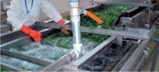

GREENCLEANER
Green cleaner is eco-friend like sterilized antiseptic solution,CLO2,
which is easily decomposed by the light.
It makes you to use tap water more easily and safer.
BUSINESS

사례1. 탱크 및 파이프 청소
조리기구등의 살균 및 세정! 이산화염소수는 세균막을 제거시키는 효능이 강하고 강력한 산화력으로 빛에 의해 쉽게 분해되며 잔류물의 영향이 없어 환경친화적이므로 식재료의 세정이나 식기, 조리기구등의 세척시 뛰어난 살균 능력을 발휘합니다.

사례1. 탱크 및 파이프 청소
조리기구등의 살균 및 세정! 이산화염소수는 세균막을 제거시키는 효능이 강하고 강력한 산화력으로 빛에 의해 쉽게 분해되며 잔류물의 영향이 없어 환경친화적이므로 식재료의 세정이나 식기, 조리기구등의 세척시 뛰어난 살균 능력을 발휘합니다.

사례1. 탱크 및 파이프 청소
조리기구등의 살균 및 세정! 이산화염소수는 세균막을 제거시키는 효능이 강하고 강력한 산화력으로 빛에 의해 쉽게 분해되며 잔류물의 영향이 없어 환경친화적이므로 식재료의 세정이나 식기, 조리기구등의 세척시 뛰어난 살균 능력을 발휘합니다.